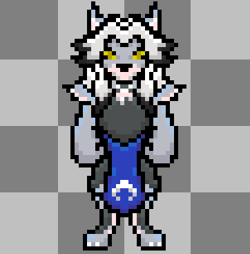

Shattered Phases
Shattered Phases is a turn based RPG. Inspired by Toby Fox's hit game Deltarune, the player can find similar combat mechanics.

Using Asesprite, I would create the sprites as seen above so I could export
them to GameMaker Studio.
Within Aseprite, I can also animate the sprites, just as long as I have the correct layers on the timeline